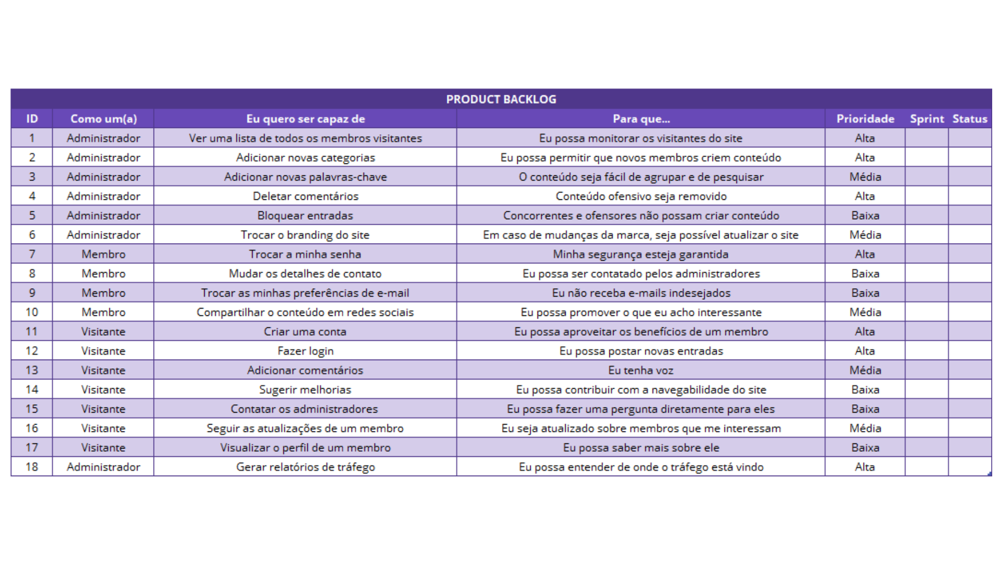

4ª Trilha: Missões no scrum: Backlogs
Tipos de backlog:
1. Product Backlog:

Lista de todas as tarefas, funcionalidades, requisitos e melhorias necessárias para o
desenvolvimento do produto. Ela evolui ao longo do desenvolvimento e deve ser bem estruturada para
que atenda integralmente à necessidade do cliente. Algumas correções e mudanças podem ser feitas no
produto nas futuras versões.
O backlog é dinâmico, evoluindo conforme o produto e o ambiente.
Itens possuem atributos como descrição, ordem, estimativa e valor, sendo que o Time de
Desenvolvimento é responsável pelas estimativas de esforço. A equipe do projeto deve ser capaz de
determinar se cada item do backlog é factível, se há informações suficientes e, ainda, elaborar
estimativas para eles. Com isso, pode-se determinar a produtividade ou a velocidade do projeto.
Um Product Backlog nunca está completo. Os primeiros desenvolvimentos apenas estabelecem os
requisitos inicialmente conhecidos e melhor entendidos. O Product Backlog evolui tanto quanto o
produto e o ambiente no qual ele será utilizado evoluem. O Product Backlog é dinâmico, mudando
constantemente para identificar o que o produto necessita para ser mais apropriado, competitivo e
útil. O Product Backlog existirá enquanto o produto também existir.
Como esse processo tem procedimentos bem definidos, é comum que as pessoas tentem escapar dele
fazendo solicitações urgentes. Para evitar isso, todos os pedidos devem passar pelo Product Owner
(PO) — o único responsável por tudo o que acontece na lista de prioridades. Ele é responsável por
priorizar os itens do backlog, garantindo que o time trabalhe no que é mais importante. O PO deve
influenciar o time, ajudando no entendimento e nas decisões conflituosas de troca, mas as pessoas
que irão realizar o trabalham fazem a estimativa final.
O Product Backlog é a única fonte de trabalho do Scrum Team e não faz parte da sprint.